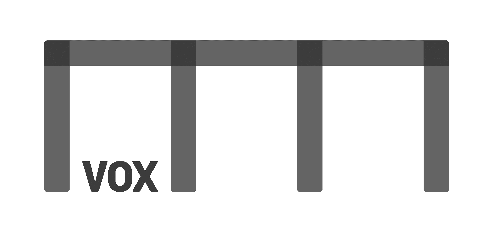

VOX Stockholm
Ett civilsamhällets hus där ökad samverkan, delande av kunskap och tjänster stärker civilsamhällets roll och impact.
Vill du veta mer? Hör av dig till Jacob Wisén på jacob.wisen@voxstockholm.se

Ett civilsamhällets hus där ökad samverkan, delande av kunskap och tjänster stärker civilsamhällets roll och impact.
Vill du veta mer? Hör av dig till Jacob Wisén på jacob.wisen@voxstockholm.se